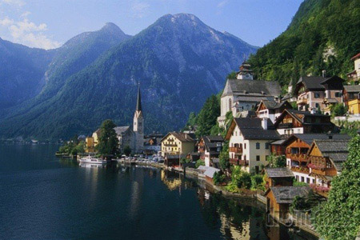
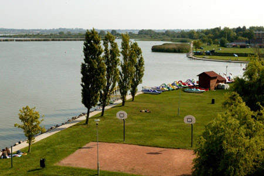

| Tó neve | Attersee | Traunsee | Mondseee | Wolfgang-see | Hallstätter See | Velencei-tó |
|---|---|---|---|---|---|---|
| vízfelülete |
45,9km | 24,5 km | 14,2 km | 12,8 km | 8,6 km | 25,8 km |
| tszf. magassága |
469 m | 423 m | 481 m | 538 m | 508 m | 100 m |
| legnagyobb mélysége |
171 m | 191 m | 68 m | 114 m | 125 m | 2 m |
| legnagyobb városa |
Seewalchen | Gmunden | Mondsee | St. Gilgen | Halstatt | |
| egyedisége | legnagyobb | legmélyebb | legmelegebb | legszebb | leghidegebb | |
| fotó |  |
 |  |